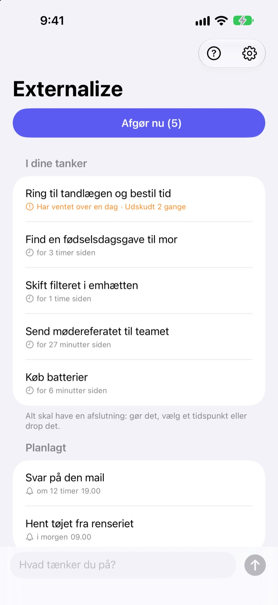
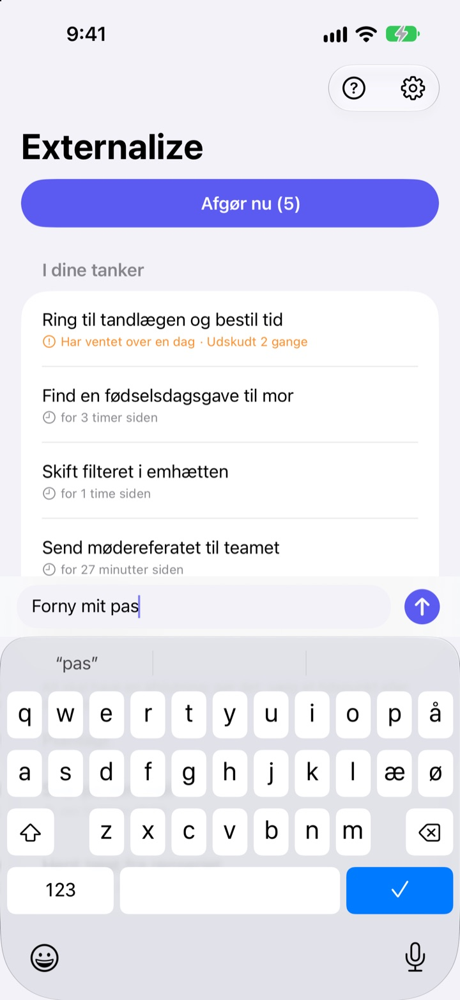
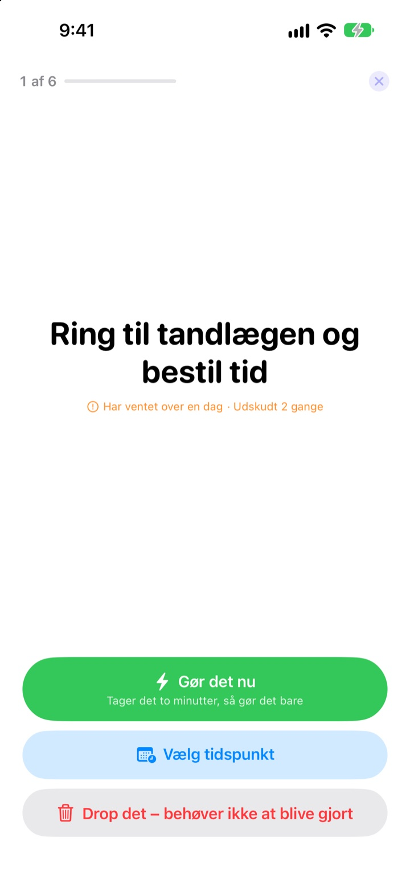
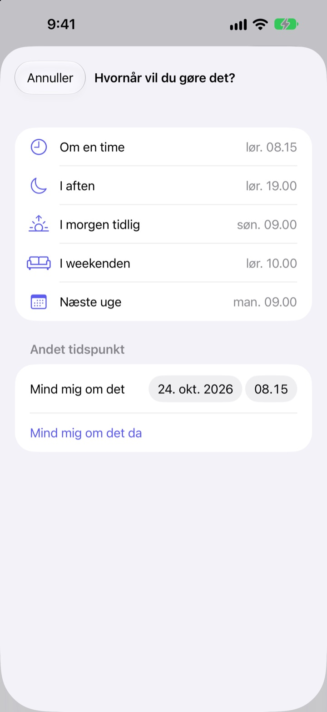

Skriv det ned nu.
Afgør det i aften.
”Nå ja, jeg skal også lige …” Få det ud af hovedet med få ord, og giv slip. Om aftenen klarer du det, der er tilbage, én ting ad gangen.
Alle funktioner er gratis. Ingen konto, intet login.

Prøv det her
Skriv noget, du går og tænker på, eller tryk på et eksempel. Tryk derefter på ”Afgør nu”, og giv hver ting en afslutning.
Selv småting fylder i hovedet
I brusebadet, for rødt lys, lige før du falder i søvn: ”Det skal jeg huske at gøre.” Der er ingen steder at skrive det, så du holder fast i det, og det, du er i gang med, lider under det. To do-apps vil have en liste og en deadline først, så selv at skrive det ned bliver en opgave.
Tre sekunder, så giver du slip
Åbn appen, og skriv i linjen nederst. Ingen lister, mapper eller deadlines.
Tryk på widgetten på låseskærmen, så åbner appen med en tom linje. Sig Husk i Externalize til Siri, eller læg det på handlingsknappen, så er det gemt uden at åbne appen.

Om aftenen, én ting ad gangen
Er der noget tilbage, får du én påmindelse kl. 21.00. Er alt klaret, sker der ingenting.
Når du går i gang, vises tingene én ad gangen, stort og tydeligt. Vælg ”Gør det nu”, ”Vælg tidspunkt” eller ”Drop det”, så kommer den næste. Tager det to minutter, så start timeren og gør det med det samme.

Intet bliver liggende
Vælg ”Om en time”, ”I aften”, ”I morgen tidlig”, ”I weekenden” eller ”Næste uge”, så kommer tingen tilbage dér. Fra notifikationen trykker du direkt på ”Færdig”, ”I morgen tidlig” eller ”Drop det”.
Det, der har ventet over et døgn, og det, du bliver ved med at udskyde, bliver markeret, så du kan se, hvad der hele tiden glider.

Kom i gang i tre trin
- 1
Skriv det ned
Få ord i appen, i widgetten på låseskærmen eller via Siri, det der er nærmest.
- 2
Tillad notifikationer
Appen spørger én gang, første gang du skriver noget. De bruges til aftenpåmindelsen og de tidspunkter, du vælger.
- 3
Afgør det om aftenen
Tryk på påmindelsen eller ”Afgør nu”, og giv hver ting en afslutning.
Direkte fra listen
- Tryk på en ting
- vælg ”Færdig”, ”Vælg tidspunkt” eller ”Drop det”
- Skub til højre
- Færdig (forsvinder fra listen)
- Skub til venstre
- Drop det, eller ”Udskyd” for at vælge tidspunkt
- Afgør nu
- gå det resterende igennem, én ad gangen
- Husk i Externalize
- sig det til Siri uden at åbne appen
- Indstillinger ▸ Aftenpåmindelse
- skift tidspunkt eller slå fra
Når du vælger tidspunkt, betyder ”I aften” kl. 19.00, ”I morgen tidlig” kl. 9.00, ”I weekenden” lørdag kl. 10.00 og ”Næste uge” mandag kl. 9.00. Du kan også selv vælge dato og klokkeslæt.
Ofte stillede spørgsmål
Kan jeg skrive noget ned uden at åbne appen?
Ja. Sig Husk i Externalize til Siri, så spørger Siri, hvad du vil skrive, og gemmer det. Tildel genvejen ”Skriv ned” til handlingsknappen i Indstillinger, så er ét tryk nok.
Hvordan tilføjer jeg widgetten på låseskærmen?
Hold fingeren på låseskærmen, tryk på Tilpas, og vælg låseskærmen, tryk på widgetområdet, og tilføj Externalize. Ét tryk åbner en tom linje, og widgetten viser, hvor mange ting der er tilbage. Der findes også en lille widget til hjemmeskærmen.
Kan jeg ændre eller slå aftenpåmindelsen fra?
Tryk på tandhjulet øverst til højre ▸ Aftenpåmindelse for at skifte tidspunkt eller slå den fra. Den er sat til kl. 21.00 og er tavs på dage, hvor intet er tilbage.
Jeg får ingen notifikationer.
Hvis Externalizes indstillinger siger, at notifikationer er slået fra, så tryk på knappen dér, og slå dem til i iPhones indstillinger. På dage, hvor intet er tilbage, kommer der ingen aftenpåmindelse, og det er helt normalt.
Hvordan kommer en ting med tidspunkt tilbage?
Du får en notifikation på det valgte tidspunkt. Hold fingeren på den for straks at vælge ”Færdig”, ”I morgen tidlig” eller ”Drop det”. Gør du ingenting, ryger den tilbage i ”I dine tanker”, og du afgør den næste gang.
Kan jeg hente noget tilbage, som jeg har markeret som færdigt eller droppet?
Nej. Afgjorte ting forsvinder fra listen, og der er intet arkiv. Er du i tvivl, så vælg hellere et tidspunkt end at droppe det.
Følger mine ting med til en ny iPhone?
Nej. Alt bliver på denne enhed og sendes aldrig til iCloud eller en server. Sletter du appen, forsvinder det også.
Hvilke enheder virker den på?
iPhone med iOS 17 eller nyere.
Spørgsmål eller en fejl? Skriv til mizzking75@gmail.com. Skriv gerne din iPhone-model og iOS-version, så kan vi se på det hurtigere.